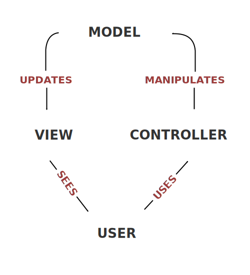

Will Fuqua | Michigan!/usr/group | February 2014
The Problem
- HTML was originally envisioned for static documents
- Adding dynamic behavior with JavaScript is awkward
- Complex web apps are hard
The Problem
Hello, {{name}}
Plain Ol' JavaScript:
var myLabel = document.getElementById("my-label");
var myInput = document.getElementById("my-input-box");
myInput.addEventListener("change", function() {
myLabel.innerText = "Hello, " + this.value;
}, false);
The business domains we operate in are complex. We want our tools to remove technical complexity, so we can focus on solving business problems.
HTML with Angular
Hello, {{name}}
Hello, {{name}}
AngularJS's Solution
- Model / View / Controller architecture
- Databinding removes boilerplate "glue code"
- Extends HTML with a vocabulary for dynamic web apps
- Useful out-of-the-box extensions (called directives)
- Create your own directives
MVC Architecture
Angular's MVC Architecture
Let's build something!
References
- MVC Architecture: http://en.wikipedia.org/wiki/File:MVC-Process.svg